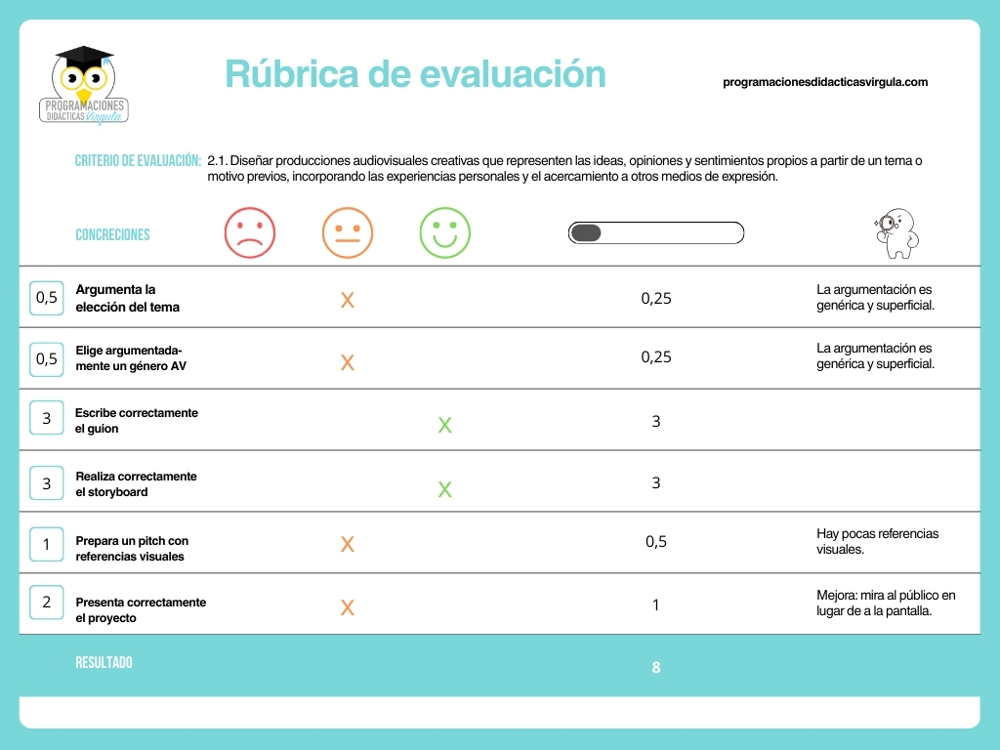

Cómo hacer una rúbrica de evaluación
Hace unos años las rúbricas se introdujeron en el ámbito educativo y con el paso del tiempo su uso se ha extendido notablemente. ¿Quieres saber por qué? ¿Y quieres implementarlas en tus clases o en tu programación didáctica? Pues sigue leyendo para descubrir cómo hacer una rúbrica. Más abajo podrás descargar el archivo de los ejemplos.
¿Qué es una rúbrica?
Una rúbrica es un instrumento de calificación que aglutina una serie de criterios en función de los cuales se obtiene la nota final. A su vez, es un instrumento de aprendizaje, ya que el alumno conoce qué aspectos se tendrán en cuenta para valorar su trabajo.
Piénsalo. Seguro que alguna vez te ha pasado que no has obtenido la nota que esperabas. Y se debió a que el profesor o incluso el tribunal de oposiciones tuvo en cuenta factores que tú pasaste por alto. Esto se debe a la opacidad que muchas veces tiene la evaluación. Pero no olvidemos de que estamos hablando de un proceso de enseñanza-aprendizaje, donde lo importante es que los alumnos alcancen unos objetivos y desarrollen unas competencias preestablecidas. Entonces, ¿de qué nos sirve ser opacos en la calificación?
Las rúbricas son la herramienta que habilita a docente y alumnos a hablar el mismo idioma, a prestar atención a los mismos aspectos y, aún más, a optimizar el proceso de enseñanza-aprendizaje. Así que, vamos a ver cómo hacer una rúbrica.
Cómo elaborar una rúbrica de evaluación
Existen diferentes tipos y formatos de rúbrica, como veremos después. Ahora te voy a explicar el método más rápido y cómodo para elaborar unas rúbricas de evaluación completas en las que puedas relacionar objetivos, competencias y contenidos con criterios de evaluación.
En resumen, estos son los pasos que debes seguir:
- Escribe el título de tu unidad
- Plantea tus actividades de evaluación
- Emparéjalas con sus correspondientes criterios de evaluación y estándares de aprendizaje (o con sus resultados de aprendizaje y criterios de evaluación si estás en FP).
- Asigna varios niveles de logro a cada criterio (por ejemplo, apto/no apto, 1/2/3, o cualquier otro).
- Dale un valor a cada nivel (por ejemplo, 0/1 o 0/5/10).
- Configura la fórmula para obtener la final ¡y listo! Ya tienes tu rúbrica creada.
Tipos de rúbricas
Como ya adelantábamos, hay diferentes formas de hacer rúbricas, aunque todas mantienen la misma esencia. Lo realmente importante es que busques tu propio estilo y apliques aquellas que mejor se adapten a tus actividades de evaluación y a tu manera de trabajar.
En el vídeo veíamos un tipo de rúbrica sintetizada, donde decimos si se cumple o no un criterio. Aquí no hay términos medios. Sin embargo, en ocasiones, sí que hay matices grises entre el blanco y el negro. Por eso podemos usar una rúbrica casi igual de sintética, pero con más de 2 valores, por ejemplo 3.
En esta rúbrica de ejemplo vemos el criterio de evaluación que nos disponemos a valorar y está dividido en 6 concreciones, esto es partes pequeñitas del criterio que valoramos individualmente. Cada concreción tiene 3 valores posibles: mal, regular o bien (carita roja, naranja o verde). En cada fila vemos la concreción con su puntuación total, seguida del texto de la concreción, el indicador de logro alcanzado por el alumno y la puntuación correspondiente. A la derecha puedes ver un espacio que dejo para observaciones, que siempre vienen bien para encaminar la mejora del alumno.

Ahora bien, seguro que estás echando en falta el tipo de rúbrica más usado en el que a un criterio le acompañan varios niveles de cumplimiento especificados en una frase, tal y como vemos en esta imagen:

En verdad, es exactamente lo mismo que en la rúbrica sintética de 3 niveles. La única diferencia es que en esta rúbrica se desarrolla cada nivel de cumplimiento (son nuestros indicadores de logro).
Para crear esta rúbrica, lo único que cambia con respecto a la del vídeo es el desarrollo de los niveles de cumplimiento de cada criterio/estándar. En la columna de «Resultado» he vuelto a usar la «Validación de datos» y el «Formato condicional». Necesito un desplegable con tres niveles (1, 2 y 3) y para que concuerde con los colores de la rúbrica le daré el color rojo al número 1, el amarillo al número 2 y el verde al número 3. Para obtener el valor de cada fila, he aplicado la fórmula lógica «SI» de esta manera: =SI(E6=1;0) + SI(E6=2;0,5) + SI(E6=3;1).

Mis 10 consejos para preparar la programación
Ahora te toca elegir. Si quieres una versión clásica en tus rúbricas, créalas de acuerdo a este último ejemplo. Si prefieres ahorrar tiempo, te recomiendo el otro tipo. Aunque no se desarrolle cada indicador, ya estamos diciendo si el criterio se cumple total o parcialmente, o si no se cumple en absoluto.


Que pasada!!!!
Por fin tengo una rúbrica fácil y superpráctica para evaluar. Toda la vida empleando el excel al mínimo… Que subidón!!
Gracias, gracias, gracias